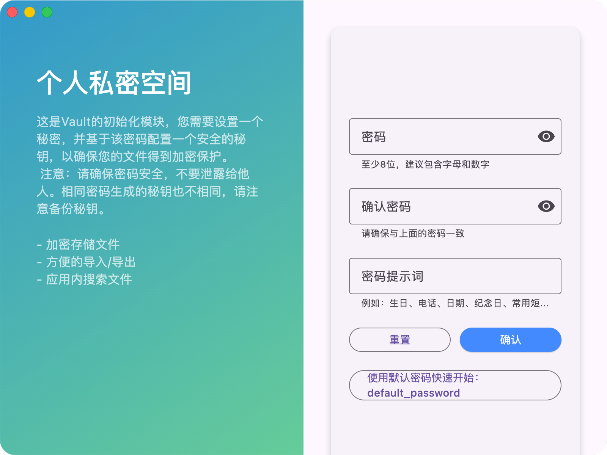
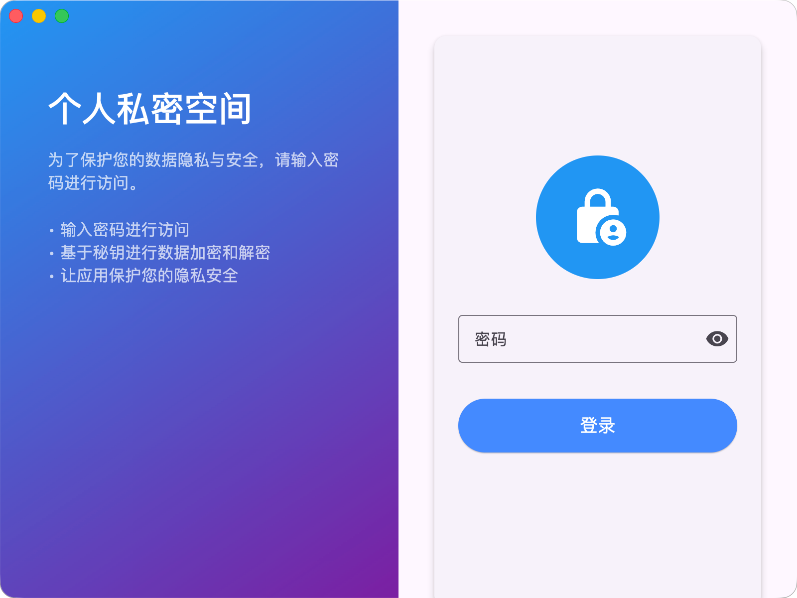
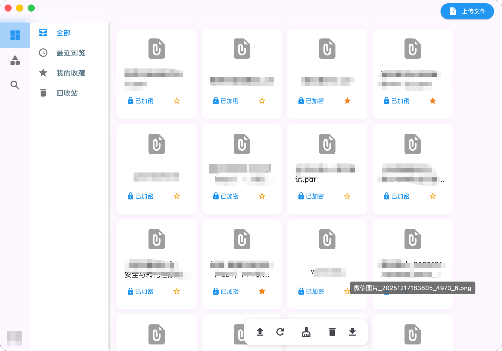
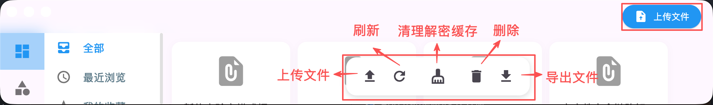
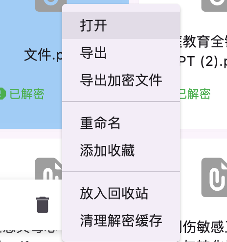
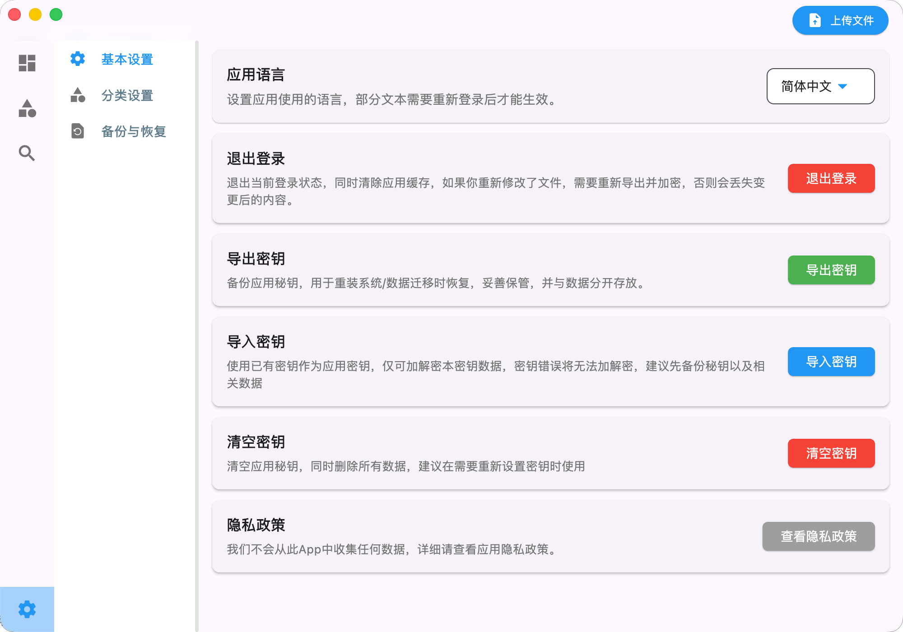
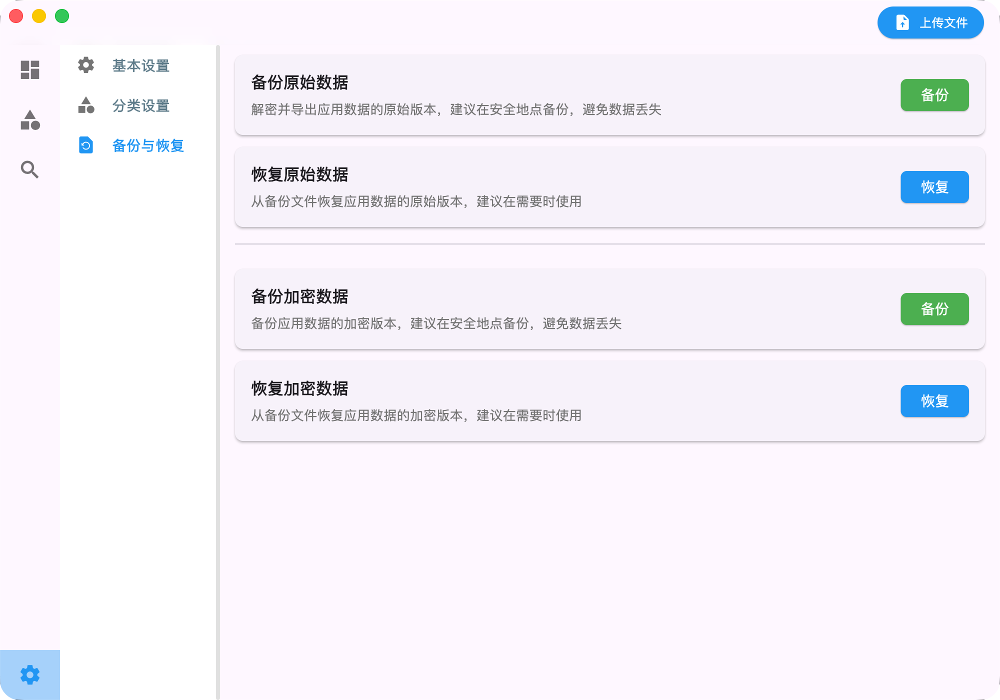

1. 产品介绍
个人私密空间是一个本地文件加密和解密的应用，提供安全的存储空间，帮助用户安全存储和管理自己的数字资产，如图片、视频、文档等。
当你的电脑需要修理时，当有人需要借用你的电脑时，你不用担心对方会访问不该访问的内容，因为个人私密空间会加密存储你受保护的文件，防止被泄露。没有密码，对方无法访问你的受保护的内容；没有秘钥，对方无法解密你的受保护的内容。
💡 提示：让应用保护你的数字资产，防止泄露！不要让自己的数据在互联网上裸奔，也不要出现“某某门”事件。
2. 初始化密码

初始化密码界面
初始化密码是使用个人私密空间的第一步，你需要设置一个密码来保护你的应用和重要文件。
密码的长度建议为8位以上，包含字母、数字和特殊字符。初始化的时候会根据密码生成一个秘钥，用于加密和解密后续的文件。
- 第一步：输入密码
- 第二步：确认密码，以防止输入错误
- 第三步：输入提示词，提示词建议包含一些你自己的信息，方便你在忘记密码时使用，在输入错误密码超过5次后，系统会显示提示词。不要直接在提示词中暴露密码。
- 第四步：点击确认完成初始化
您也可以点击快速开始按钮，跳过初始化密码的步骤，直接完成初始化。此时，系统会自动生成一个密码：default_password，和固定的秘钥。方便快速预览功能，但是不建议在正式使用中使用。
💡 注意：即使使用相同的密码的情况下，不同设备产生的秘钥也不相同；所以，不用担心其他人获取你的加密文件使用相同密码进行解密。
3. 登录应用

登录界面
登录应用是保护文件的重要一步，你需要输入你初始化时设置的密码，才能登录应用和查看重要的文件。
如果使用了快速开始按钮，可以输入默认密码：default_password 进行登录。
4. 基础功能使用

主界面

操作按钮
💡 提示：登录成功后，你就可以使用应用的功能了，下面是一些基础功能的使用说明。
- 上传文件：点击应用右上角或者应用底部按钮栏的上传文件按钮，选择要上传的文件，即可上传到应用中。应用会自动加密文件，存储在安全位置，但是不会原文件进行删除，如需删除需要手动删除。
- 导出文件：右键文件，或者选择后，点击应用底部按钮栏的导出文件按钮，即可导出应用中的文件到选择的路径。导出的文件会自动解密，你可以直接使用。
- 导出加密文件：右键文件，选择导出应用中的加密文件到选择的路径。导出的加密文件需要重新导入应用中，才能使用。
- 清理解密缓存：点击应用底部按钮栏的清理解密缓存按钮，即可清空应用中的解密文件，防止被泄露。注意如果不要在应用内修改文件，变更会被清理掉，如果需要保留变更，建议导出后操作并重新加密。

右键菜单
5. 基本设置

设置界面
基本设置包括应用的语言设置、退出登录、秘钥管理等。
语言设置：选择应用的语言，包括中文、英文等，部分文本需要应用重启后生效。
秘钥管理：可以对秘钥进行备份、恢复和清理操作。因为秘钥是加密文件的重要部分，所以建议备份并妥善保管，防止丢失。秘钥在重装系统或者重装应用后，导入应用中，即可使用之前的密码和加密的文件。
6. 数据恢复

设置界面
数据恢复包括应用的备份、恢复操作，包括解密后的文件和加密文件备份。
原文件备份与恢复：在更换密码或者重装应用以及系统后，你可以通过备份文件恢复你的文件。
加密文件备份与恢复：在夸设备间，设备维修期间，或者需要云端备份文件时，你可以通过备份加密文件，并在需要时恢复你的加密文件。
💡 注意：数据和秘钥分开存放，防止他人利用秘钥破解数据。
7. 联系我们
如遇到问题或需要联系，可以通过以下方式联系我们：
技术支持邮箱：aboysun@126.com

微信二维码